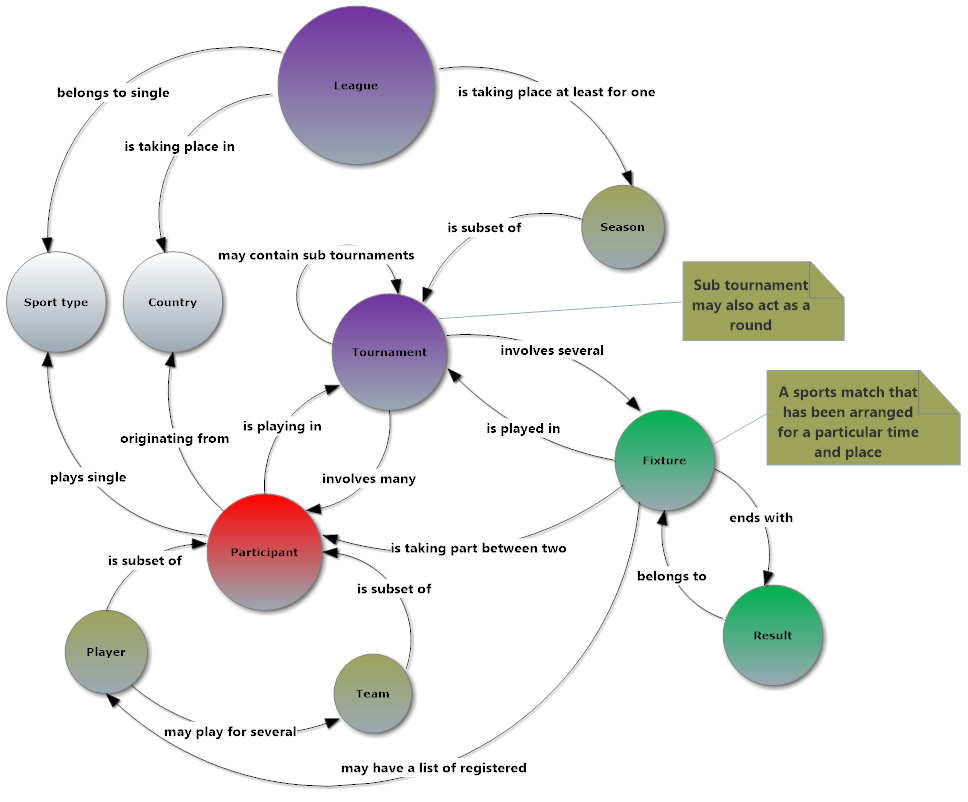
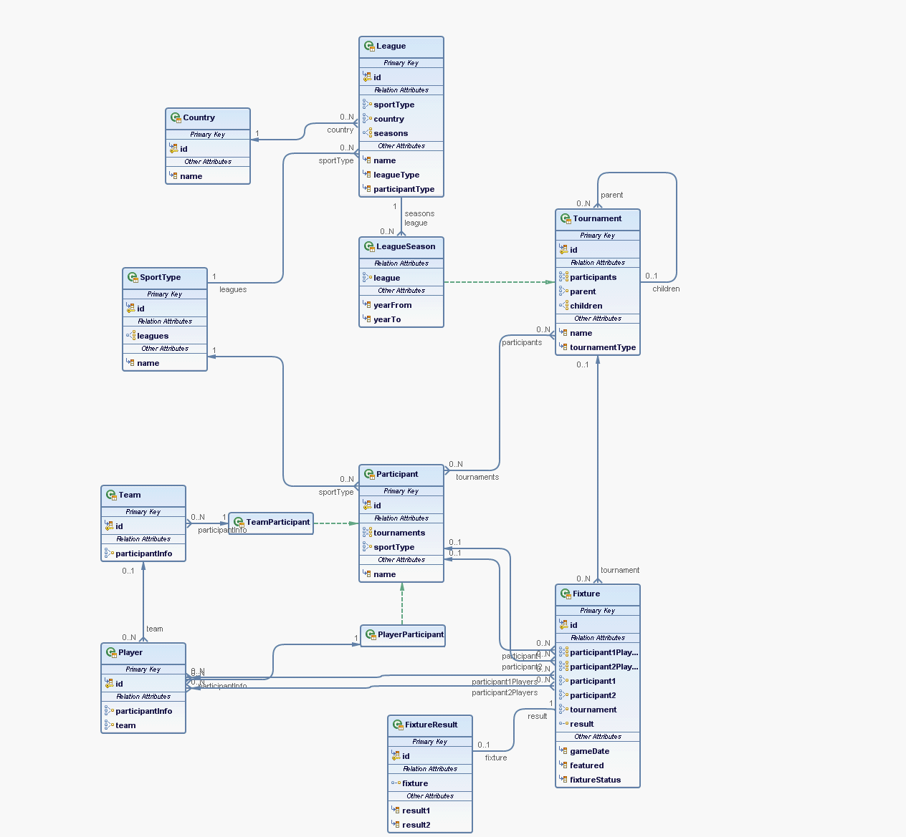

This is an open source, Java EE based solution for sports leagues, tournaments, teams/players, fixtures and results management.
Architecture page describes technical architecture, Sports asset diagrams show what assets are covered by this component and here you may find some abstract information.
League manager is distributed under the ASL 2.0 license.
PostgreSQL 9.x database is supported for sports management component. Other database types should run without issues, but officially not supported.
Jboss >=7.1.3 is supported application server.
Everything starts from a sport type. Once sport type is created, it is possible to add new league to it.
League usually belongs only to a single sport type and is taking place in single country. However, league may cover several countries, like UEFA championship. For such purposes new country types are used: "World", "Europe", etc.
League usually is taking place at least for one season. Season is created even league is acting as a single tournament event. Season usually defines the year when participants are attending the event(game/fixture).
A season is a subset of tournament, because some leagues do not have any specified list of tournaments. They use double round-robin system. In such case we do not want to create any fake single tournament. So what is tournament? A tournament asset usually covers such entities as Group, Qualification rounds, Main rounds, single/multiple elimination rounds and other names. Tournament may have sub tournaments(or group stages) and it involves many (at least two) participants. Sub tournament may also act as round.
Each tournament involves many participants. Participant usually is player or team. In tennis doubles are also treated as a team. Player also may act as a part of the team. Player/Team may play in many tournaments/leagues.
Each tournament has many fixtures - a sports matches that have been arranged for a particular time and place. Each fixture end with some kind of result. However, fixture also may be suspended, postponed or canceled. There is no result in such cases. Each fixture is played between two participants.

High level diagram transformed into JPA 2 persistence diagram:

The documentation may be found under separate REST API page.
Nothing to migrate yet.